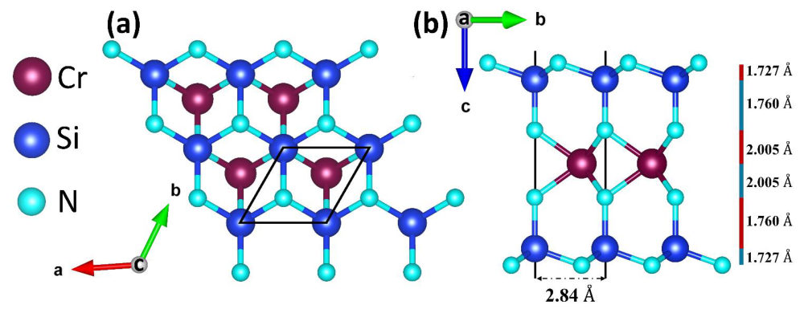
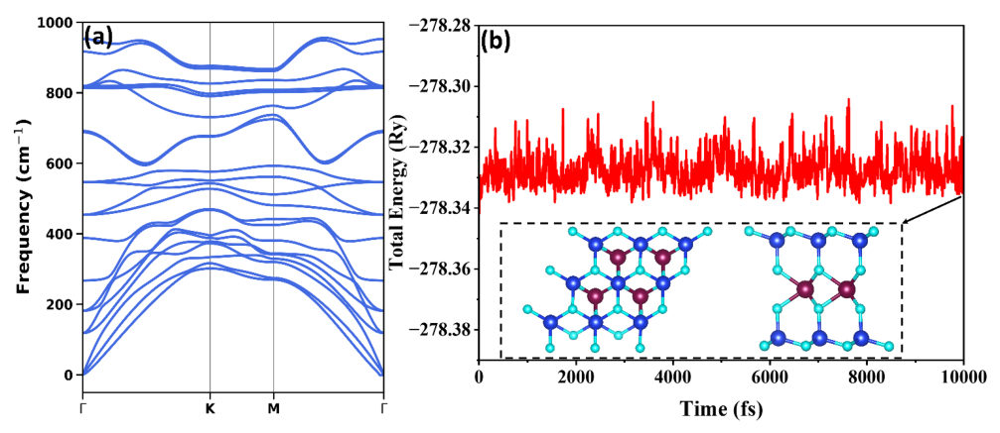
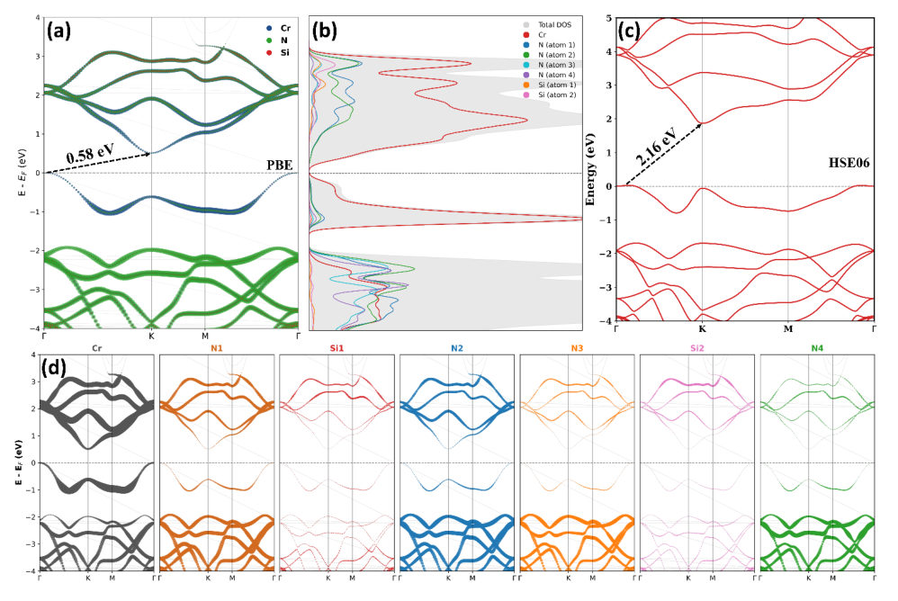
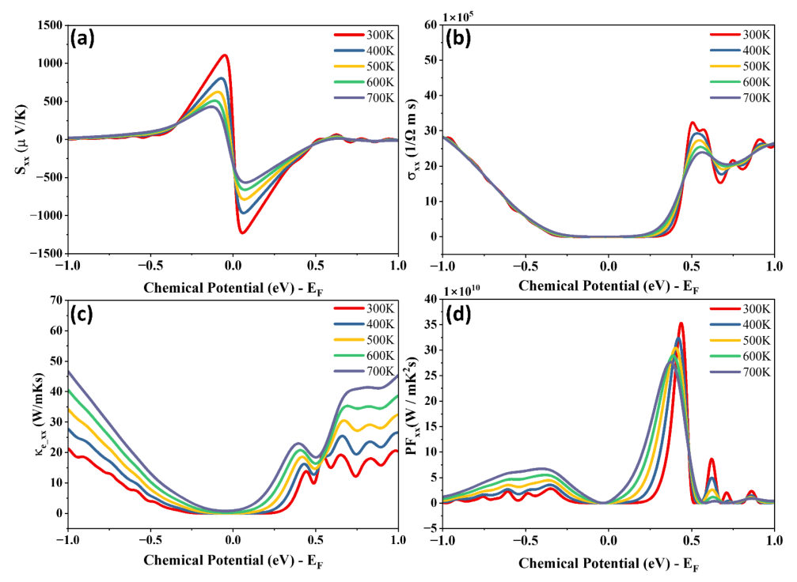

Authors: Francesca Menescardi, Stefano de Gironcoli
Type: theory · Category: disordered systems and neural networks · PDF: https://arxiv.org/pdf/2605.14793v1
Analysis basis: full PDF text, analyzed in chunks
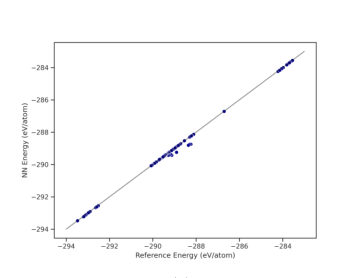
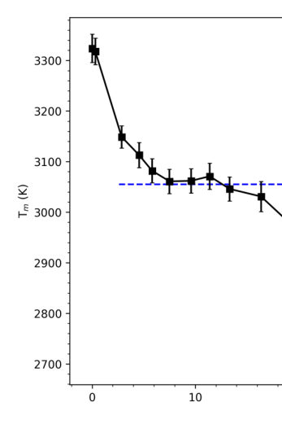
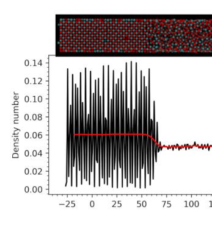
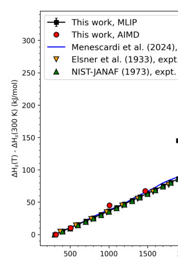
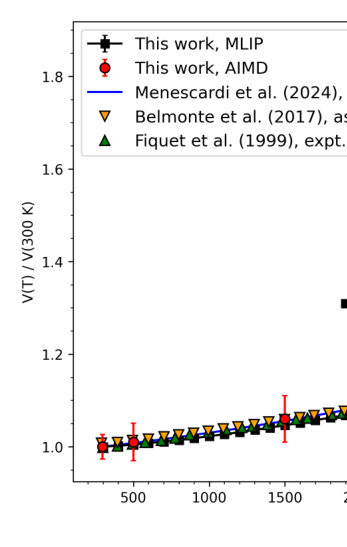
Summary. The researchers developed a machine learning interatomic potential to accurately simulate the melting behavior of calcium oxide under extreme pressures. The study provides a robust computational framework that resolves previous discrepancies in melting temperature and demonstrates that the overheating ratio is pressure-dependent.
Why it may be interesting. not directly relevant
Main problem. Determining the accurate melting temperature, high-pressure melting curve, and phase stability of calcium oxide (CaO) while overcoming the computational cost of ab-initio methods and the inaccuracies of empirical potentials.
Main result. The study establishes a high-fidelity Machine Learning Interatomic Potential (MLIP) that accurately predicts the melting temperature (approx. 3055 K via VNM and 2847 K via TPC) and shows that the overheating ratio increases with pressure up to 20 GPa.
Method. Development of an MLIP using the PANNA 2.0 framework and LATTE descriptor, followed by large-scale molecular dynamics simulations using the Void-Nucleated Melting (VNM) and Two-Phase Coexistence (TPC) methods.
Model / system. The physical system is calcium oxide (CaO), a refractory oxide. The model uses a multi-layer perceptron architecture with a high-dimensional descriptor based on Cartesian tensor contractions.
Key observables. Melting temperature (Tm), enthalpy of fusion (Delta Hf), entropy of fusion (Delta Sf), thermal expansion, density profiles, and the overheating ratio (eta).
Important parameters / regimes. Pressure range up to 20 GPa, temperature range from 300 K to 6000 K, and a radial cutoff of 5.0 Angstroms.
Assumptions / limitations. The study refutes the assumption of a constant overheating ratio under pressure; it also notes that the TPC method may inherently underestimate Tm compared to experiments.
Figures summary. Figure 1 shows MLIP accuracy via energy and force parity plots; Figure 2 plots melting temperature vs. void volume; Figure 3 shows a solid-liquid interface density profile; Figure 4 shows caloric curves; Figure 5 compares thermal expansion; Figure 6 displays the high-pressure melting and thermal instability curves.
Paper structure. The paper introduces the scientific problem and material relevance, describes the MLIP development and training dataset, details the MD simulation techniques (VNM and TPC), presents results for ambient and high-pressure melting, and concludes with the validation of the MLIP framework.
We investigate the melting behavior of calcium oxide (CaO) under extreme conditions, a problem that remains poorly constrained due to experimental limitations despite its relevance for geophysical and technological applications. We develop a Machine Learning Interatomic Potential (MLIP) for CaO with PANNA 2.0 and the LATTE descriptor, training it on a dataset of $\sim$12,000 configurations including solid, liquid, interfacial, and void-containing structures, extracted from ab-initio molecular dynamics data employing PBEsol exchange-correlation functional. We perform large-scale molecular dynamics simulations to compute the melting temperature at ambient pressure using both the void-nucleated melting (VNM) and two-phase coexistence (TPC) methods, obtaining $T_m=3055\pm11$ K and $T_m=2847\pm15$ K, respectively.\ We calculate an enthalpy of fusion of $ΔH_f\sim73$ kJ/mol, in agreement with thermodynamic assessments and ab initio calculations. We also reproduce the thermal expansion and obtain a volume increase of $\sim$29% at Tm, consistent with the corresponding decrease in density extracted from spatially resolved number density profiles. Finally, we calculate the high-pressure melting curve of CaO up to 20 GPa, providing one of the very few computational determinations of this quantity to date. The results confirm that the overheating ratio $η$ is not constant under pressure, increasing from 17% at ambient pressure to 24% at 20 GPa, confirming previous findings and ruling out the assumption of a fixed overheating ratio. Our results establish MLIP-based simulations as a robust and efficient framework for investigating phase stability in ionic oxides and provide new insight into the melting behavior of CaO under extreme conditions.
Authors: Jose Torres-Arenas, Ángel M. Fernández-Fernández, Martín Pérez-Rodríguez, Manuel M. Piñeiro
Type: theory · Category: statistical mechanics · PDF: https://arxiv.org/pdf/2605.14533v1
Analysis basis: full PDF text, analyzed in chunks
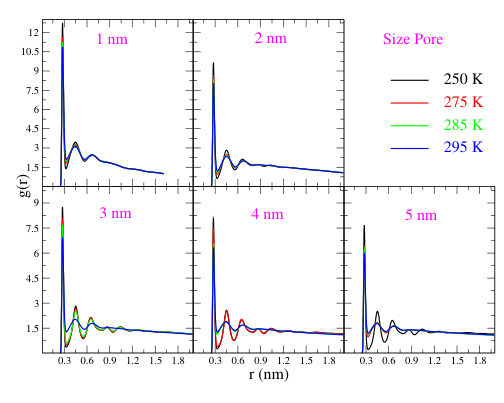
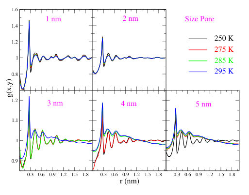
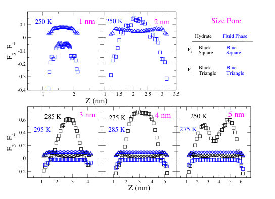
Summary. This study investigates how nanoconfinement in silica pores affects the formation of methane hydrates. It finds that in pores smaller than 2 nm, the system cannot form a 3D hydrate network because the structural order is reduced to a 2D in-plane arrangement. This 'dimensional decoupling' prevents the necessary 3D connectivity required for stable hydrate nucleation.
Why it may be interesting. not directly relevant
Main problem. Understanding the microscopic mechanisms of methane hydrate nucleation frustration and how geometric nanoconfinement modifies structural order.
Main result. Strong confinement (pores < 2 nm) suppresses 3D hydrate-like ordering through a dimensional decoupling where 3D connectivity is lost but 2D in-plane structural organization persists.
Method. Atomistic Molecular Dynamics (MD) simulations using radial distribution functions (3D and 2D) and local bond order parameters (F3 and F4).
Model / system. Water-methane systems confined between planar crystalline alpha-silica slit pores with widths ranging from 1 to 5 nm, using TIP4P/Ice and OPLS-AA force fields.
Key observables. 3D and 2D radial distribution functions (RDFs), local bond order parameters (F3 and F4), and coordination shells.
Important parameters / regimes. Pore widths (1-5 nm), temperature (250-295 K), and the critical threshold of approximately 2 nm for nucleation frustration.
Assumptions / limitations. The 3D RDF analysis is subject to limitations due to spherical averaging in anisotropic confined systems.
Figures summary. Figure 1 shows the suppression of 3D ordering in small pores and thermal destabilization in larger pores; Figure 2 demonstrates persistent 2D in-plane ordering in 1-2 nm pores; Figure 3 displays spatial profiles of order parameters across the pore width.
Paper structure. The paper introduces the problem of nucleation under confinement, describes the MD simulation setup and models, presents structural analysis via RDFs and order parameters, and concludes with the identification of dimensional reduction as the cause of frustration.
Methane hydrate nucleation under nanoconfinement remains poorly understood due to the complex interplay between geometric restriction and molecular ordering. Here, we investigate the structural organization of water-methane systems confined between silica planar slit pores with widths ranging from 1 to 5 nm and temperatures between 250 and 295 K. Three-dimensional radial distribution functions reveal a clear suppression of hydrate-like ordering at strong confinement (below 2 nm), indicating frustrated nucleation. In contrast, projected two-dimensional correlations exhibit pronounced in-plane structural organization, evidencing a confinement-induced reduction in the dimensionality of molecular order.
Authors: Wael Othman, Ibrahim Alghoul, K-F. Aguey-Zinsou5, Nacir Tit, Tanveer Hussain
Type: theory · Category: other · PDF: https://arxiv.org/pdf/2605.14646v1
Analysis basis: full PDF text, analyzed in chunks
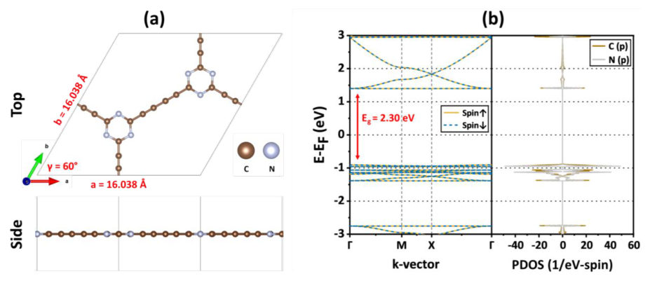
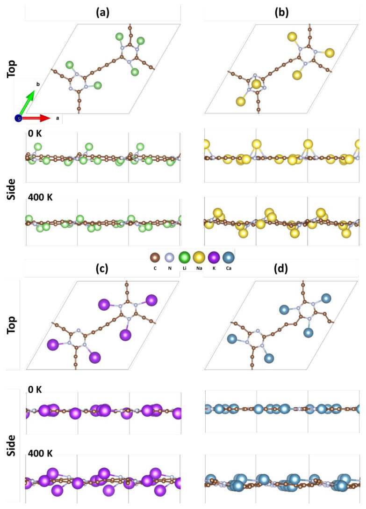
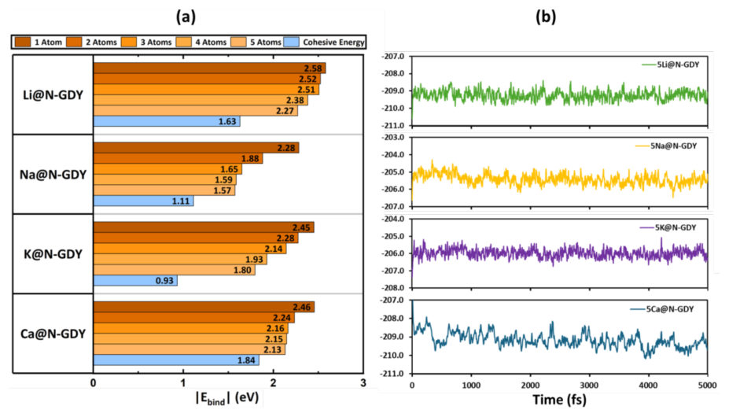
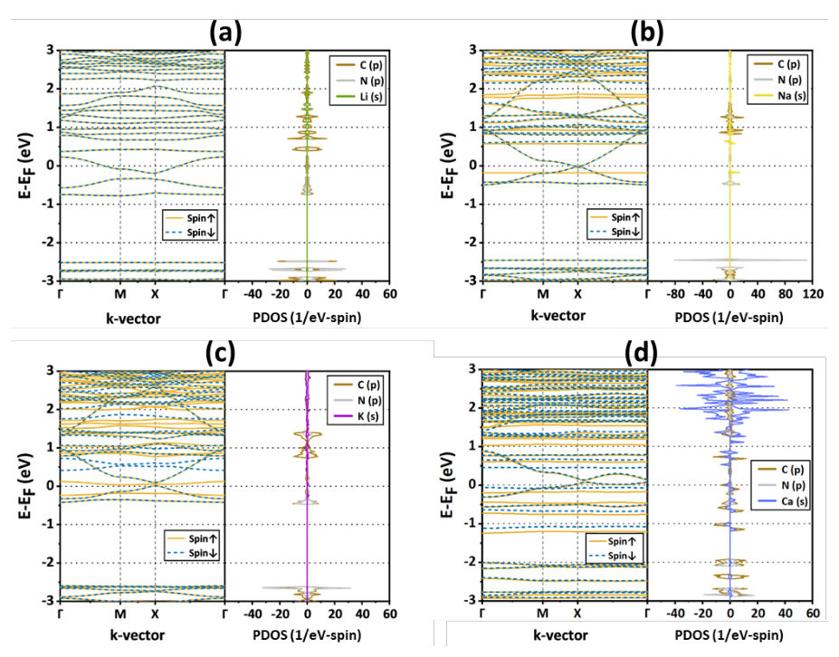
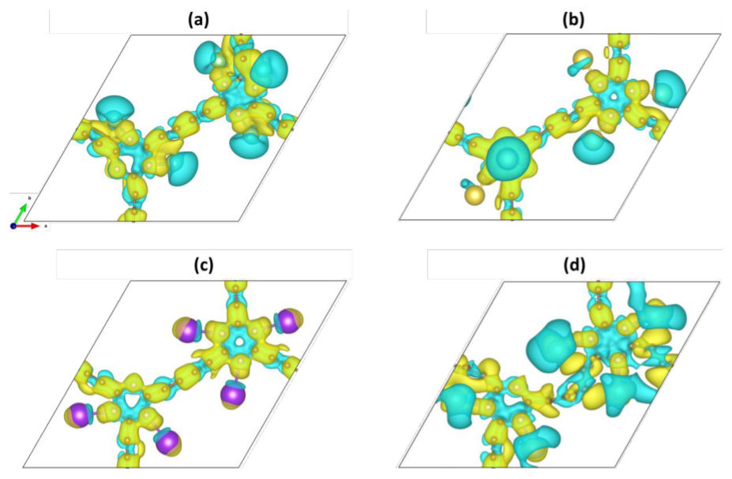
Summary. This paper demonstrates that nitrogen-doped graphdiyne can be used as a tunable 2D scaffold to stabilize light metals for high-capacity hydrogen storage. By using metal dopants to polarize hydrogen molecules, the researchers achieved theoretical capacities that exceed Department of Energy targets. The study confirms that these structures remain stable and prevent metal clustering even at elevated temperatures.
Why it may be interesting. not directly relevant
Main problem. The lack of lightweight, reversible, and high-capacity hydrogen storage media that can operate under practical, near-ambient conditions.
Main result. Nitrogen-doped graphdiyne (N-GDY) decorated with Li, Na, K, or Ca atoms provides a stable platform for hydrogen storage, with Li- and Ca-functionalized systems exceeding the US DOE target of 6.5 wt%.
Method. Density Functional Theory (DFT) combined with ab initio molecular dynamics (AIMD) and Langmuir-based statistical thermodynamic modeling.
Model / system. A nitrogen-doped graphdiyne (N-GDY) monolayer (C18N6) decorated with light metal atoms (Li, Na, K, and Ca) acting as a 2D platform for molecular hydrogen (H2) adsorption.
Key observables. Binding energy (E_bind), adsorption energy (E_ads), gravimetric capacity (wt%), and charge transfer (Bader charge).
Important parameters / regimes. Temperature (up to 400 K), pressure (30 atm adsorption/3 atm desorption), and the optimal adsorption energy window (-0.15 to -0.35 eV).
Assumptions / limitations. The study focuses on intrinsic material capacity rather than full system-level complexity; calculations are based on a specific C18N6 monolayer model.
Figures summary. Figure 1: Pristine N-GDY structure and band structure; Figure 2: Metal-decorated N-GDY structures; Figure 3: Metal stability and AIMD results; Figure 4: Spin-polarized band structure/DOS; Figure 5: Charge density difference; Figure 6: Hydrogenated structures; Figure 7: Adsorption energy evaluation; Figure 8: Thermodynamic analysis of H2 uptake.
Paper structure. Introduction to hydrogen storage challenges, description of the N-GDY system and metal decoration, computational methodology, analysis of metal stability and electronic properties, evaluation of hydrogen adsorption capacity and thermodynamics, and a comparative analysis with other 2D materials.
Hydrogen (H2) is a promising carbon-neutral energy carrier. However, its deployment is limited by the lack of lightweight, reversible storage media that operate under practical conditions. Here, we establish nitrogen-doped graphdiyne (N-GDY) as a programmable two-dimensional platform for stabilizing dispersed light-metal dopants and enabling high-capacity physisorption of molecular H2. The computational package involves density functional theory (DFT) combined with ab initio molecular dynamics (AIMD) and Langmuir-based statistical thermodynamic modeling. The results revealed that N-sites of N-GDY bind up to five Li, Na, K, and Ca atoms per primitive cell with binding energies of -2.27, -1.57, -1.80, and -2.13 eV, respectively, exceeding their respective bulk cohesive energies. AIMD simulations at 400 K further confirm the structural robustness of the decorated frameworks and the absence of metal aggregation. The polarised metal centres activate reversible H2 adsorption through electrostatic and dispersion interactions, with average adsorption energies falling within the optimal window (-0.15 to -0.35 eV per H2). Sequential adsorption analysis reveals uptake of up to 25 H2 molecules per primitive cell, achieving intrinsic gravimetric capacities of 13.08, 10.82, 9.23, and 9.15 wt% for Li-, Na-, K-, and Ca-functionalized systems, respectively. Thermodynamic analysis indicates favorable adsorption-desorption behavior under near-ambient conditions, with Li- and Ca-functionalized systems exceeding the 6.5 wt% U.S. Department of Energy's ultimate system-level target when considering intrinsic material capacity. These results identify N-GDY as a chemically tunable scaffold for dispersing lightweight metals and provide a mechanistic design strategy for achieving high-capacity, reversible hydrogen storage in porous two-dimensional materials.
Authors: M. A. Zudov
Type: theory · Category: other · PDF: https://arxiv.org/pdf/2605.15111v1
Analysis basis: full PDF text, analyzed in chunks
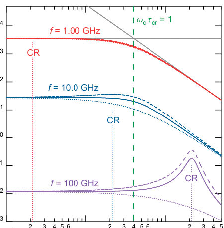
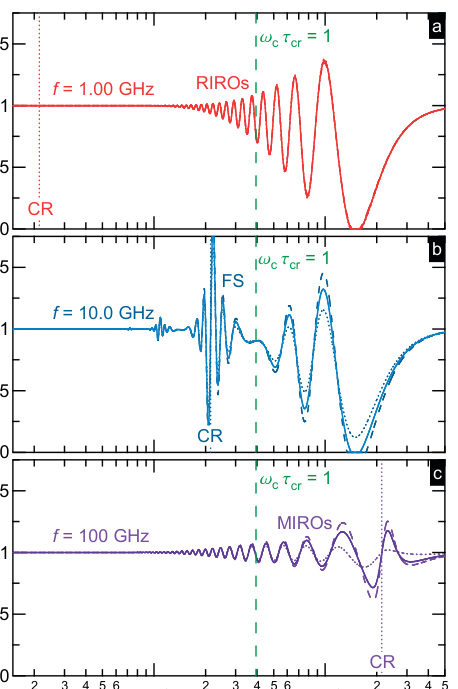
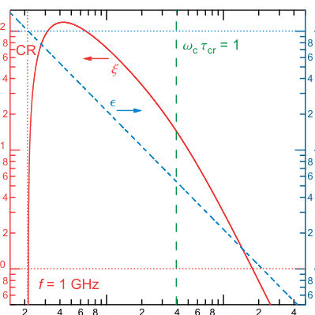
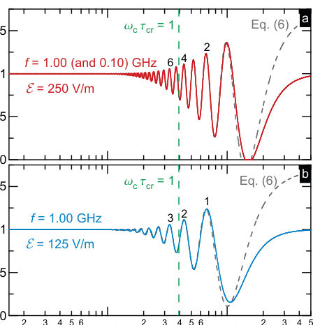
Summary. This paper predicts a new type of resistance oscillation in 2D electron systems called RIROs, which occur at low frequencies and high power. Unlike standard microwave-induced oscillations, these are driven by the radiation electric field strength rather than the frequency. This discovery provides a potential new method for mapping cyclotron resonance and measuring electric fields in semiconductor heterostructures.
Why it may be interesting. not directly relevant
Main problem. The paper investigates a new class of magneto-resistance oscillations, termed radiowave-induced resistance oscillations (RIROs), occurring on the high-field side of the cyclotron resonance.
Main result. The author identifies that RIROs are distinct from MIROs because their amplitude is power-independent and their period is controlled by the radiation electric field rather than the radiation frequency.
Method. The study uses an analytical derivation based on the displacement contribution to photoresistance, examining the limit of high radiation power and low radiation frequency.
Model / system. The physical system is a two-dimensional electron system (2DES) in the regime of overlapping Landau levels with short-range disorder.
Key observables. Oscillatory photoresistance (RIROs), radiation electric field (E), and cyclotron resonance absorption width.
Important parameters / regimes. Radiation frequency (omega), cyclotron frequency (omega_c), radiation electric field (E), radiation power (P), and the Dingle factor.
Assumptions / limitations. The analysis assumes the limit of short-range/sharp disorder, low radiation frequency (omega << omega_c), and high radiation power (P >> 1).
Figures summary. Figure 1 shows dimensionless microwave power versus magnetic field for various frequencies and polarizations; Figure 2 shows calculated photoresistance versus magnetic field for different frequencies.
Paper structure. The paper introduces the phenomenon of RIROs, provides a theoretical derivation of the photoresistivity, compares the results to known MIROs, analyzes the periodicity regimes (1/B vs 1/B^2), and discusses experimental observability.
We consider the displacement contribution to photoresistance in overlapping Landau levels at radiation frequencies much smaller than the cyclotron frequency. We show that in the limit of short-range disorder and high radiation power, this contribution leads to a new class of magneto-resistance oscillations. These oscillations, which we call radiowave-induced resistance oscillations (RIROs), are distinct from the well known microwave-induced resistance oscillations in the following aspects: (i) their amplitude is independent of power, (ii) their period is controlled by the radiation electric field, rather than by the radiation frequency, and (iii) they can be either $1/B$ or $1/B^2$-periodic, depending on $B$, with the crossover point linked to the width of the cyclotron resonance absorption curve. We also show that RIROs should be readily observed in experiments.
Authors: Yong-Cheng Jiang, Xing-Xiang Wang, Xiao Hu
Type: theory · Category: other · PDF: https://arxiv.org/pdf/2605.14436v1
Analysis basis: full PDF text, analyzed in chunks
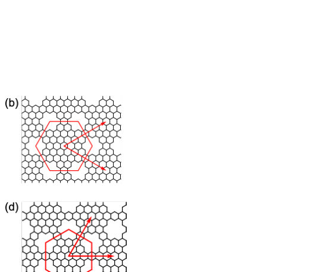
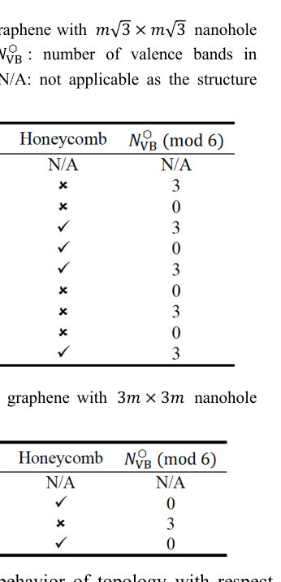
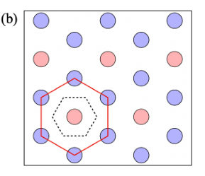
Summary. This paper identifies a periodic pattern in the topological properties of graphene with nanohole arrays based on the array's lattice constant. It demonstrates that the topology can be predicted using simple symmetry-based diagnostics like parity indices. This provides a practical framework for engineering new topological materials using graphene-based nanostructures.
Why it may be interesting. not directly relevant
Main problem. Predicting and diagnosing the periodic emergence of nontrivial band topology in graphene superstructures created by periodic nanohole arrays.
Main result. The authors establish that nontrivial topology appears periodically with the lattice constant: with a period of two for triangular arrays and a period of six for honeycomb arrays. They provide a predictive guide for designing topological electronic states in graphene derivatives.
Method. The study uses a tight-binding model for pi-electrons, combined with band-folding analysis, parity index calculations at high-symmetry points, and the analysis of Wannier center Wyckoff positions.
Model / system. Graphene superstructures featuring periodic triangular and honeycomb arrays of nanoholes (specifically 6-carbon atom clusters) with lattice constants defined by msqrt(3)x msqrt(3) or 3m x 3m.
Key observables. Energy gap at the Fermi level, parity index of valence bands, Wyckoff positions of Wannier centers, and the number of valence bands modulo 6.
Important parameters / regimes. Lattice constant (m), nanohole geometry (triangular vs. honeycomb), and the number of removed carbon atoms.
Assumptions / limitations. The analysis assumes the system respects C'1 crystalline symmetry and that nanoholes act as a periodic potential inducing intervalley coupling.
Figures summary. Figure 1 shows schematics of different nanohole array geometries; Figure 2 illustrates Wyckoff positions and the location of Wannier centers.
Paper structure. The paper introduces the problem of topological diagnosis in graphene derivatives, presents a tight-binding model and symmetry analysis, details the periodic results for triangular and honeycomb arrays, and concludes with a predictive guide for material design.
We derive a way to diagnose band topology for graphene with triangular and/or honeycomb array of nanoholes directly from the lattice constant of superstructure $m\sqrt{3}\times m\sqrt{3}$ with integer $m$. Taking into account the $C_{6v}$ crystalline symmetry respected by nanoholes and their array, we demonstrate that nontrivial topology appears periodically with $m$ with period two (six) for triangular (honeycomb) array. These behaviors are verified by Wyckoff positions of Wannier centers and parity index of valence bands at high-symmetry points in Brillouin zone. The results provide a convenient guide for material design of topological electronic states based on graphene derivatives.
Authors: Yuting Xiong, Yingjie Hu, Wei Ren, Heng Gao
Type: theory · Category: other · PDF: https://arxiv.org/pdf/2605.14506v1
Analysis basis: full PDF text, analyzed in chunks
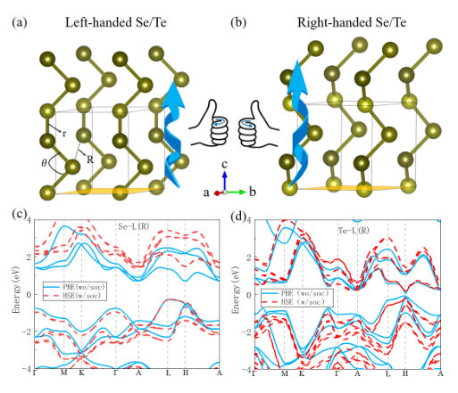
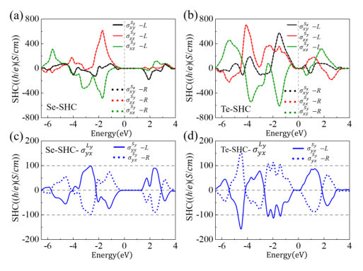
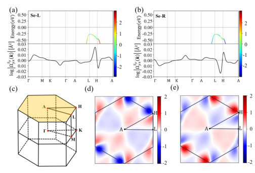
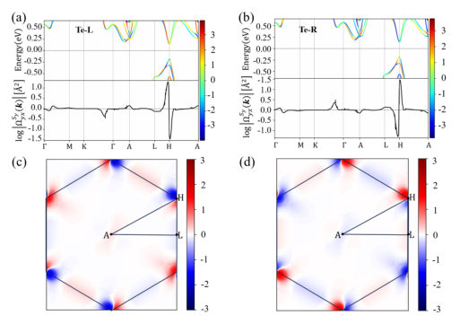
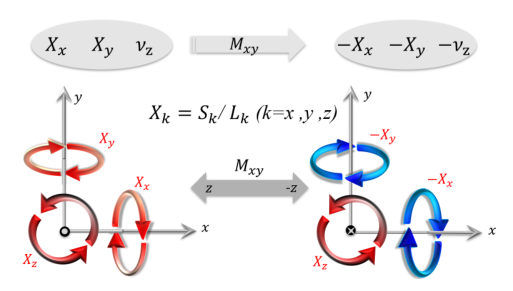
Summary. This paper uses first-principles calculations to show that the spin and orbital Hall effects in trigonal Selenium and Tellurium are sensitive to the crystal's handedness. It identifies that specific transport tensor components change sign between enantiomers because of how the Berry curvature transforms under mirror symmetry. This provides a potential method to determine the structural chirality of materials through measurable transport signals.
Why it may be interesting. not directly relevant
Main problem. Understanding the symmetry origin of the handedness (chirality) sensitivity of spin Hall conductivity (SHC) and orbital Hall conductivity (OHC) in chiral crystals.
Main result. The researchers demonstrated that the SHC and OHC tensor components (specifically sigma_yx^Sy and sigma_yx^Ly) reverse sign between left- and right-handed enantiomers of trigonal Se and Te due to the antisymmetric transformation of the spin/orbital Berry curvature under a mirror operation.
Method. First-principles calculations using Density Functional Theory (DFT) with PBE and HSE06 functionals, including spin-orbit coupling, and the Kubo formula for calculating Hall responses via Berry curvature.
Model / system. The study focuses on trigonal Selenium (Se) and Tellurium (Te), which are prototypical chiral semiconductors featuring infinite helical screw structures along the c-axis with space groups P3_221 and P3_121.
Key observables. Spin Hall Conductivity (SHC) tensor elements, Orbital Hall Conductivity (OHC) tensor elements, and Spin/Orbital Berry Curvatures.
Important parameters / regimes. Space groups P3_221 and P3_121, mirror operation M_xy, and the spin-orbit coupling strength.
Assumptions / limitations. The sign reversal is a symmetry-governed consequence for specific mirror-related enantiomorphic structures and may not be a universal criterion for all chiral crystals.
Figures summary. Fig 1: Schematic of left/right-handed crystal structures and band structures; Fig 2: SHC tensor components and energy-dependent variation showing sign reversal; Fig 4: k-resolved spin Berry curvature; Fig 5: OHC tensor components and energy dependence; Fig 6: Schematic of tensor transformations under mirror symmetry.
Paper structure. The paper introduces the problem of chirality-dependent transport, describes the structural and electronic properties of Se and Te, presents the symmetry analysis of tensor transformations, details the DFT and Kubo-based calculation results for SHC and OHC, and concludes with the implications for identifying structural handedness.
Chiral crystals exhibit enantiomer-dependent transport phenomena that generate pure spin or orbital currents, while the handedness sensitivity of spin and orbital Hall conductivities (SHC/OHC) remains insufficiently understood. Using first-principles calculations, we demonstrate that trigonal selenium and tellurium -- prototypical chiral semiconductors -- exhibit opposite signs of the SHC/OHC tensor elements $σ_{yx}^{S_y}$ and $σ_{yx}^{L_y}$ between their left- and right-handed enantiomers. This behavior originates from the mirror operation relating the two structures, described by space groups $P3_221$ (left-handed) and $P3_121$ (right-handed). Although both enantiomers share identical band structures and four nonzero SHC/OHC tensor components, $σ_{yx}^{S_y}$ and $σ_{yx}^{L_y}$ reverse sign due to the antisymmetric transformation of the spin/orbital Berry curvature under the $M_{xy}$ mirror operation. More generally, for mirror-related enantiomorphic structures, selected SHC/OHC tensor components can exhibit symmetry-governed sign reversal. For trigonal Se and Te, the calculated signs of these components can be directly correlated with the left- and right-handed structures under the chosen coordinate convention. These results clarify the symmetry origin of handedness-dependent SHC/OHC and suggest a possible route for correlating measurable SHC/OHC signals with structural handedness in specific chiral materials.
Authors: Yuji Hamai, Katsunori Wakabayashi
Type: theory · Category: numerical methods · PDF: https://arxiv.org/pdf/2605.14414v1
Analysis basis: full PDF text, analyzed in chunks
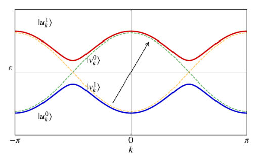
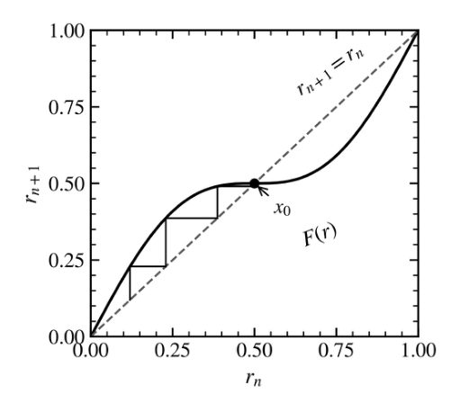
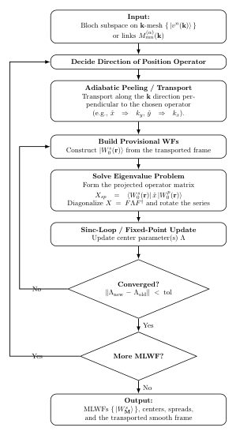
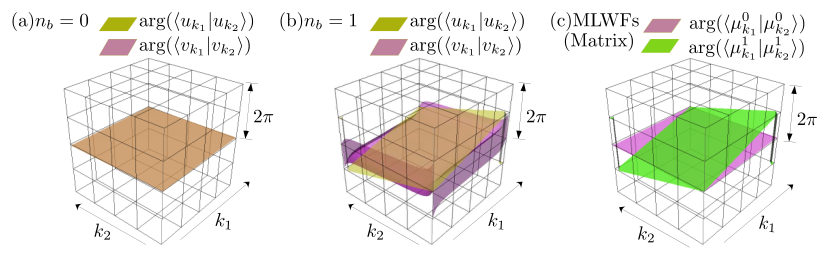
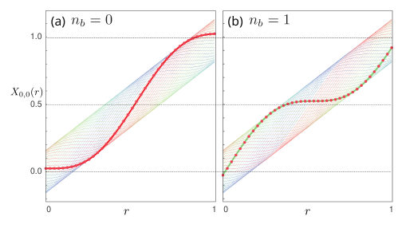
Summary. The authors present a new, non-variational algorithm for constructing highly localized Wannier functions by using adiabatic transport to smooth out gauge discontinuities. This approach replaces expensive global minimization with a deterministic iterative process and provides a geometric explanation for why the spread of Wannier functions increases with grid resolution in certain 2D systems.
Why it may be interesting. not directly relevant
Main problem. The difficulty of constructing Maximally Localized Wannier Functions (MLWFs) in higher dimensions due to geometric frustration and the computational intensity of traditional variational minimization.
Main result. The development of a non-variational, deterministic algorithm that uses discrete adiabatic transport to smooth gauges, and the discovery that the O(L) scaling of spread in graphene is due to the accumulation of gauge defects along a boundary seam.
Method. A constructive framework using discrete Kato parallel transport (band peeling), SVD regularization, and a 'sinc-loop' fixed-point iteration to solve for Wannier centers.
Model / system. The method is applied to 1D and 2D isolated composite-band systems, including Krönig-Penney models, 2D square potentials, and graphene.
Key observables. Wannier function spread, Wannier centers, overlap phase planarity, and gauge defect density.
Important parameters / regimes. Mesh resolution (L), number of bands (Nc), and the projected position operator eigenvalues.
Assumptions / limitations. The method assumes the composite energy bands are separated from the rest of the spectrum by finite gaps and that the projection operator remains C1 continuous.
Figures summary. Schematics of band peeling; cobweb diagrams of iteration convergence; flowcharts of the numerical workflow; comparisons of corrugated vs. planar overlap phases; and visualizations of MLWF orbital shapes and scaling.
Paper structure. The paper introduces the problem of gauge frustration, proposes a transport-based algorithm, justifies it via adiabatic theory, presents a numerical workflow (sinc-loop), validates it against standard methods (Wannier90), and analyzes the geometric origin of spread scaling in graphene.
Maximally localized Wannier functions (MLWFs) are conventionally constructed by iteratively minimizing a spread functional over a high-dimensional gauge landscape. In this work, we present a non-variational constructive algorithm that unifies gauge smoothing and the eigenvalue problem of the projected position operator into a single deterministic framework. We demonstrate that discrete adiabatic transport across band degeneracies emerges naturally as an integral part of the solution procedure for the position eigenvectors. In this transport-aligned gauge, the Bloch overlaps exhibit an approximately linear phase dependence, allowing the Wannier centers to be extracted via deterministic fixed-point iterations and self-consistent updates rather than spread-functional minimization. Benchmark calculations for one- and two-dimensional systems yield spreads and orbital shapes in good agreement with standard minimization schemes. Furthermore, this analytical approach transparently isolates the physical origin of the $\mathcal{O}(L)$ mesh-dependent spread scaling ($L$ being the boundary seam resolution) observed in graphene, demonstrating that it is an intrinsic geometric manifestation of non-commuting projected position operators forcing finite gauge defects to accumulate along a one-dimensional boundary seam.
Authors: Liling Sun, Shu Cai, Jinyu Zhao, Qi Wu, Yang Ding, Tao Xiang, Ho-kwang Mao
Type: theory · Category: strongly correlated electrons · PDF: https://arxiv.org/pdf/2605.14265v1
Analysis basis: full PDF text, analyzed in chunks
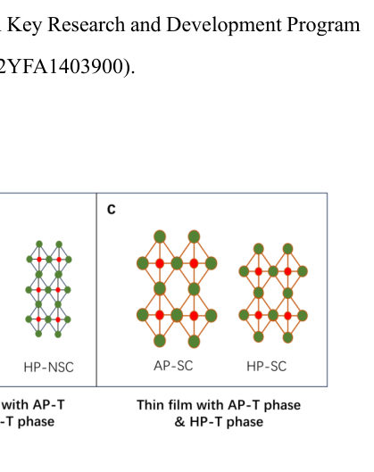
Summary. This paper proposes a new mechanism called Shear-Stress-Constrained Superconductivity to explain why superconductivity in nickelates is so sensitive to external conditions. It suggests that a specific window of shear strain is required to align Ni-O bonds and orbitals correctly. This framework successfully unifies the behavior of high-pressure bulk crystals and strained epitaxial thin films.
Why it may be interesting. not directly relevant
Main problem. The difficulty in achieving reproducible superconductivity in Ruddlesden-Popper nickelates due to extreme sensitivity to sample quality, oxygen content, and stress conditions.
Main result. The authors propose the Shear-Stress-Constrained Superconductivity (SSCS) model, which posits that superconductivity emerges only when local Ni-O framework deformation falls within a specific bounded shear-strain window.
Method. The paper develops a theoretical framework (SSCS scenario) to unify observations from bulk crystals under high pressure and epitaxial thin films under substrate-induced strain.
Model / system. The system consists of Ruddlesden-Popper nickelates, such as La3Ni2O7, characterized by a metastable lattice with an intrinsic mismatch between perovskite blocks and rock-salt layers.
Key observables. Transition temperature (Tc), superconducting volume fraction, resistance, diamagnetism (via NV sensing), and local stress tensor components.
Important parameters / regimes. Local shear stress, normal stress, oxygen stoichiometry, Ni-O-Ni bond angles, and orbital coupling between Ni dz2 and dx2-y2.
Assumptions / limitations. The RP lattice is treated as thermodynamically metastable and kinetically stabilized.
Figures summary. Figure 1 provides a schematic comparison of different states: (a) bulk transition via elastic shear strain, (b) a non-superconducting tetragonal phase, and (c) an epitaxial film locked into a shear-strained state by a substrate.
Paper structure. The paper introduces the problem of reproducibility in nickelates, proposes the SSCS model, explains how the model unifies bulk and thin-film observations, and discusses the role of defects and local constraints.
Ruddlesden-Popper nickelates exhibit superconductivity under pressure in bulk crystals and under epitaxial constraint in thin films, while remaining highly sensitive to sample quality, oxygen content, defects, and stress conditions. We propose that the metastable RP lattice becomes superconducting only when the local constrained deformation of the Ni-O framework falls within a bounded shear-strain window. This deformation controls octahedral rotations, the interlayer Ni-O-Ni bond angle, and coupling between Ni dz2 and dx2-y2 orbitals. This shear-stress-constrained superconductivity scenario unifies the understanding of the pressure threshold, reversibility, spatial inhomogeneity, pressure-medium dependence, film-substrate sensitivity, and reproducibility.
Authors: Rao Uzair Ahmad, Fahd Sikandar Khan, Nasir Javed
Type: theory · Category: other · PDF: https://arxiv.org/pdf/2605.14408v1
Analysis basis: full PDF text, analyzed in chunks




Summary. This paper uses DFT to demonstrate that the 2D CrSi2N4 monolayer is a stable, multifunctional material suitable for waste-heat recovery, photodetectors, and hydrogen production. It specifically shows that applying tensile strain can significantly enhance its efficiency as a catalyst for the hydrogen evolution reaction.
Why it may be interesting. not directly relevant
Main problem. The study aims to investigate the multifunctional potential of the 2D CrSi2N4 monolayer for applications in electrocatalysis (HER), thermoelectrics, and optoelectronics, specifically focusing on how strain engineering can tune its properties.
Main result. The CrSi2N4 monolayer is found to be stable and highly multifunctional, exhibiting a high n-type thermoelectric power factor and strong optical absorption; notably, +5% biaxial strain significantly improves HER activity by reducing the hydrogen adsorption free energy from 1.05 eV to 0.46 eV.
Method. First-principles Density Functional Theory (DFT) using Quantum Espresso, including PBE and HSE06 functionals, phonon dispersion (DFPT), Ab-initio Molecular Dynamics (AIMD), and semiclassical Boltzmann transport theory.
Model / system. A 2D CrSi2N4 monolayer with a symmetric septuple-layer (N-Si-N-Cr-N-Si-N) structure belonging to the P-6m2 space group.
Key observables. Cohesive energy, phonon dispersion, bandgap, static dielectric constant, absorption coefficients, Seebeck coefficient, power factor, and hydrogen adsorption free energy (delta GH).
Important parameters / regimes. Biaxial strain ranging from -5% to +5%, temperature range from 300 K to 700 K, and relaxation time of 10 fs.
Assumptions / limitations. Constant relaxation time approximation (CRTA) for transport properties and use of the Computational Hydrogen Electrode (CHE) method for electrocatalysis.
Figures summary. Figure 2 shows phonon dispersion and AIMD energy evolution; Figure 7 displays the electronic band structure under strain; Figure 8 illustrates the modulation of hydrogen adsorption free energy under strain; Table 4 provides a comparative analysis of catalytic performance against other 2D materials.
Paper structure. The paper progresses from structural and mechanical stability analysis to electronic and optical properties, followed by thermoelectric transport calculations, and concludes with strain-engineered electrocatalytic performance for the hydrogen evolution reaction.
First-principles density functional theory (DFT) is employed to evaluate the structural, electronic, optical, thermoelectric, and electrocatalytic properties of monolayer CrSi2N4. Its symmetric N-Si-N-Cr-N-Si-N septuple-layer structure exhibits dynamic, thermal (300 K), and mechanical stability, supported by a -8.76 eV/atom cohesive energy. PBE and HSE06 functionals reveal an indirect bandgap of 0.58 eV and 2.16 eV, respectively, driven by localized Cr-3d and N-2p states. The monolayer features 15.57 static dielectric constant and maximum absorption coefficients of 0.9 X 10^6 cm-1 (visible) and 1.4 X 10^6 cm-1 (deep-UV). Semiclassical Boltzmann calculations predict an outstanding room-temperature n-type thermoelectric power factor of 3.5 x mW/mK2. For hydrogen evolution (HER), the basal plane yields a baseline hydrogen adsorption free energy (ΔGH) of 1.05 eV at the N-site. Applying +5% expansive biaxial strain improves HER kinetics, reducing ΔGH to 0.46 eV. Thus, CrSi2N4 is a resilient, tuneable candidate for waste-heat recovery, photodetectors, and sustainable electrocatalysis.
Authors: Leonid Prigozhin, Vladimir Sokolovsky
Type: theory · Category: numerical methods · PDF: https://arxiv.org/pdf/2605.14818v1
Analysis basis: full PDF text, analyzed in chunks
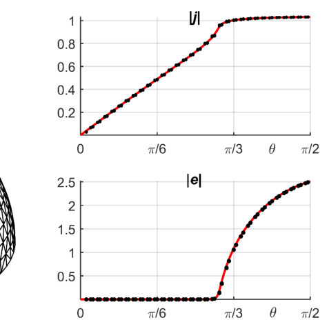
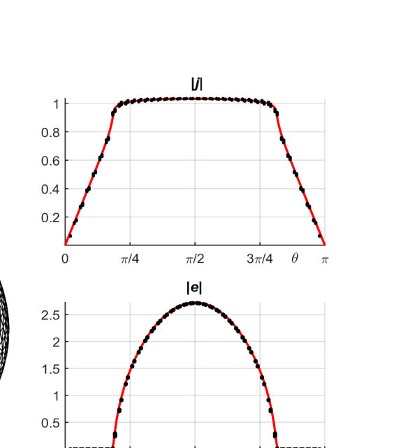
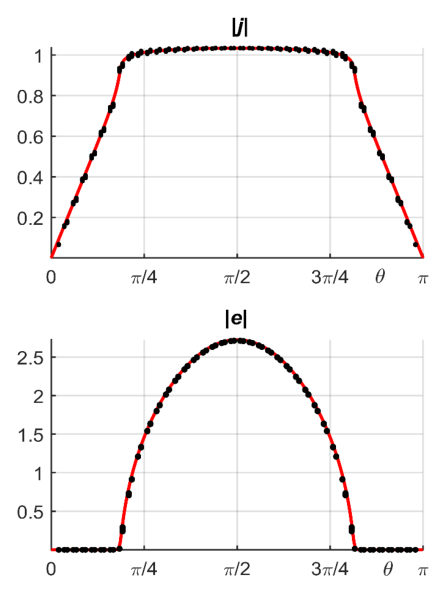
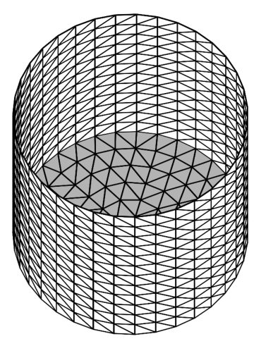
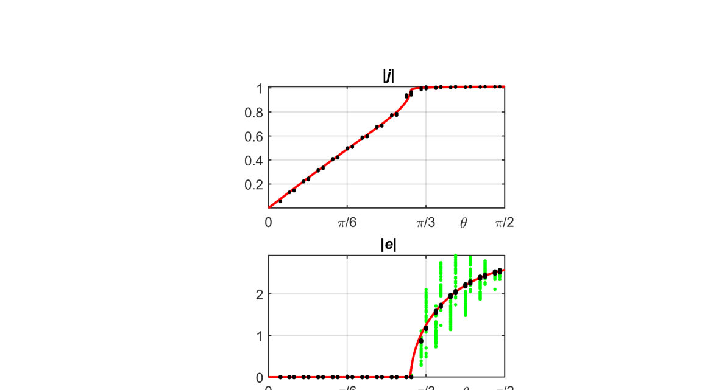
Summary. This paper presents an improved numerical framework for simulating the electromagnetic behavior of curved, thin-film superconductors. By using a mixed T-E formulation, the authors achieve higher accuracy in calculating electric fields in highly nonlinear regimes, which is critical for designing devices like superconducting dynamo pumps.
Why it may be interesting. not directly relevant
Main problem. Developing an accurate numerical method for modeling the magnetization and electric field of non-flat, thin high-temperature superconducting (HTS) shells, specifically overcoming errors in electric field computation caused by highly nonlinear current-voltage characteristics.
Main result. The extended T-E formulation-based mixed finite element method provides superior electric field accuracy compared to direct methods and successfully models complex geometries like spheres and cylindrical magnetic dynamo pumps.
Method. A mixed finite element method using nonconforming Crouzeix-Raviart elements for the T-potential and piecewise constant vector functions for the rotated electric field, utilizing both analytical and Gauss quadrature integration.
Model / system. Thin-shell approximation of HTS layers (e.g., REBCO/YBCO) on metal substrates, modeled with a power-law resistivity and field-dependent critical current density in geometries such as spheres, hemispheres, and cylinders.
Key observables. Sheet current density (j), electric field (e), magnetic induction (B), and generated open-circuit voltage (V).
Important parameters / regimes. Power-law index (n), critical sheet current density (jcs), substrate resistivity (rho_m), and external magnetic field (h).
Assumptions / limitations. The superconducting film is treated as infinitely thin, the surface is orientable, and the magnetic field calculation uses a piecewise constant approximation of the current-induced field.
Figures summary. The figures show triangular meshes for various geometries (hemisphere, sphere, cylinder), comparison plots of finite element solutions against spectral reference methods, and current density distributions in a dynamo pump.
Paper structure. The paper begins with the mathematical derivation of the T-E formulation for non-flat shells, moves to the numerical discretization and implementation details, validates the method against spectral methods for simple geometries, and concludes with a realistic application to a cylindrical magnetic dynamo pump.
Numerical methods for modeling thin-film magnetization are primarily focused on computing the current density distribution. The highly nonlinear current-voltage characteristic of type-II superconductors significantly complicates the accurate computation of the electric field. The T-E formulation-based mixed finite element method, previously derived for flat superconducting films, enables the simultaneous, accurate determination of both variables. Another advantage of this method is that the computational domain is limited to the film itself: no meshing of the surrounding space is required. The thin-shell approximation reduces the problem to a two-dimensional one. This work extends the T-E formulation and numerical method to non-flat superconducting shells with a metal substrate. We validate the method with several test examples, including modeling the magnetization of a sphere. The method is then applied to a realistic model of a cylindrical magnetic dynamo pump, and the generated open-circuit voltage is computed.
Authors: O. Fabelo, L. Cañadillas-Delgado, D. Vie, E. Matesanz, J. Gonzalez-Platas, D. Errandonea
Type: experiment · Category: statistical mechanics · PDF: https://arxiv.org/pdf/2605.14792v1
Analysis basis: full PDF text, analyzed in chunks
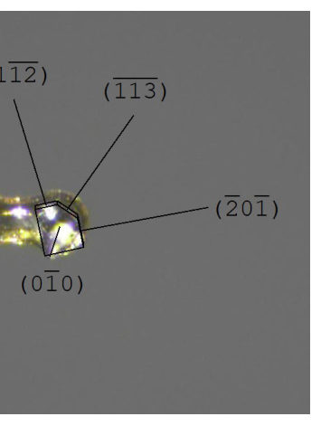
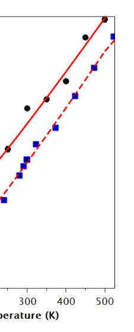
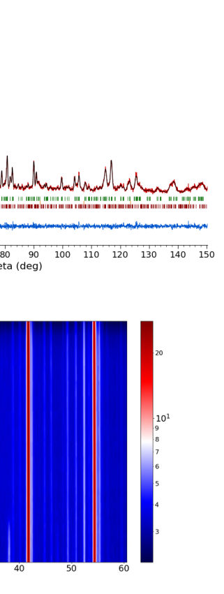
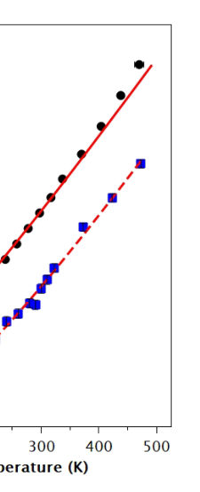
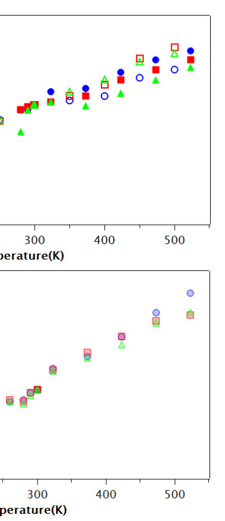
Summary. This paper investigates the thermal expansion of ferberite and its synthetic composite over a wide temperature range using X-ray and neutron diffraction. It discovers that the synthetic sample has a much lower thermal expansion coefficient and smaller volume, attributing this to mechanical constraints from a secondary phase. The study provides a comprehensive thermodynamic description of the material's structural evolution.
Why it may be interesting. not directly relevant
Main problem. The study aims to characterize the thermal expansion of natural ferberite (FeWO4) and its synthetic composite (FeWO4:Fe2WO6) and to explain the significant discrepancy in their thermal expansion coefficients and unit-cell volumes.
Main result. The synthetic composite exhibits a ~40% smaller thermal expansion coefficient and a reduced reference volume compared to natural ferberite, likely due to mechanical constraints from the Fe2WO6 secondary phase rather than chemical oxidation.
Method. The researchers used a multi-technique approach including single-crystal X-ray diffraction, powder X-ray diffraction, and neutron powder diffraction across a temperature range of 2 K to 1123 K.
Model / system. The physical system consists of natural ferberite (monoclinic wolframite-type structure) and a synthetic 7:1 composite of FeWO4 and Fe2WO6. Thermodynamic modeling was performed using the Kroll and Berman approaches.
Key observables. Lattice parameters (a, b, c, beta), unit-cell volume, thermal expansion coefficient, and Fe-O bond distances.
Important parameters / regimes. Temperature range (2-1123 K), Neel temperature (T_N approx 62 K), and the 7:1 phase ratio in the synthetic sample.
Assumptions / limitations. The authors assume that the observed volume contraction is not due to Fe2+ to Fe3+ oxidation or oxygen vacancies, as evidenced by the stability of Fe-O bond distances.
Figures summary. Figure 1 shows the ferberite single crystal; Figure 2 and 4 show temperature evolution of unit-cell volume; Figure 3 shows neutron diffraction Rietveld refinement and magnetic Bragg reflections; Figure 5 shows anisotropic lattice parameter evolution; Figure 6 shows high-temperature volume expansion trends.
Paper structure. The paper introduces the problem of thermal expansion discrepancy, describes the experimental setup (XRD and Neutron diffraction), presents the detailed temperature-dependent structural data, discusses the thermodynamic modeling results, and concludes with a mechanistic explanation for the observed differences between natural and synthetic samples.
The thermal expansion of natural FeWO$_4$ (ferberite) and synthetic FeWO$_4$:Fe$_2$WO$_6$ (7:1) was investigated over the 2-1123 K temperature range combining single-crystal and powder X-ray diffraction together with neutron powder diffraction. High-precision lattice parameters were obtained for both samples. The temperature dependence of the unit-cell volume was analysed using physically based thermodynamic models, including the Kroll and Berman approaches as implemented in EoSFit7. All datasets are well reproduced within their respective temperature intervals. However, significant differences are observed between the behavior of ferberite and FeWO$_4$:Fe$_2$WO$_6$, which has a \~40% smaller thermal expansion coefficient and a reduced reference volume. Possible origins, including microstructural and phase-coexistence effects, are discussed. The results provide a comprehensive description of the thermal expansion behavior of FeWO$_4$ across a wide temperature range.
Authors: Shenghao Huang, Heng Gao, Hongfei Wang, Wei Ren
Type: theory · Category: other · PDF: https://arxiv.org/pdf/2605.14557v1
Analysis basis: full PDF text, analyzed in chunks
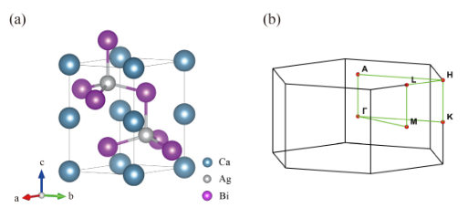
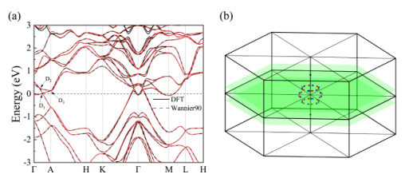
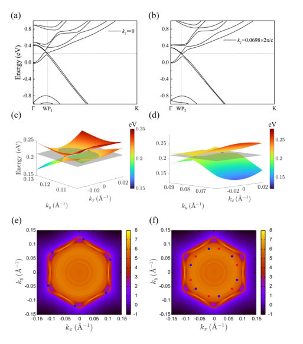

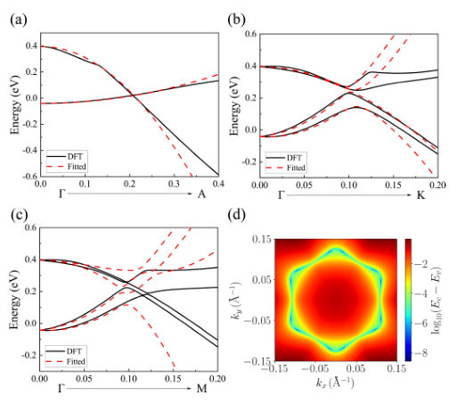
Summary. This paper identifies a new class of Dirac-Weyl semimetals that naturally host both Type-I and Type-II Weyl fermions. It demonstrates that these topological features can be selectively manipulated using strain and chemical doping, providing a platform for designing topological spintronic devices.
Why it may be interesting. not directly relevant
Main problem. The study investigates the coexistence, distribution, and tunability of Dirac and Weyl points (both Type-I and Type-II) in the Dirac-Weyl semimetal CaAgBi.
Main result. The researchers discovered 18 pairs of dual-type Weyl points and demonstrated that their positions and annihilation can be controlled via alloy engineering and external biaxial strain.
Method. First-principles Density Functional Theory (DFT) calculations using the VASP package, combined with tight-binding models via Wannier functions and k.p effective Hamiltonians.
Model / system. The primary system is the noncentrosymmetric, Wurtzite-like hexagonal crystal CaAgBi (space group P63mc). The study also explores the CaAgBixSb1-x alloy system and the high-pressure phase CaAuBi.
Key observables. Weyl point types (Type-I and Type-II), Berry curvature/chirality, surface Fermi arcs, and band inversion.
Important parameters / regimes. Bi concentration (x), biaxial tensile strain (up to 6%), and hydrostatic pressure (up to 10 GPa).
Assumptions / limitations. The alloy properties are modeled using the Virtual Crystal Approximation (VCA) with linear interpolation.
Figures summary. The figures illustrate the distribution of Dirac and Weyl points in the Brillouin zone, the comparison between DFT and tight-binding band structures for CaAuBi, and the density of surface states.
Paper structure. The paper introduces the material properties, details the computational methods, presents the discovery of new Weyl point pairs, analyzes the effects of alloy engineering and strain on topological stability, and concludes with potential applications in topological electronics.
Dirac-Weyl semimetals host both Dirac and Weyl fermions and the exploration of material candidates with tunable topological properties is essential to realize topological spintronic devices. In this work, we propose CaAgBi as a Dirac-Weyl semimetal with tunable type-I and type-II Weyl points based on first-principle calculations. In addition to the three pairs of Dirac points located along the rotational axis as previously reported, our calculations reveal 18 additional pairs of dual-type Weyl points distributed across three distinct planes: type-I in the $k_z=0$ plane and type-II in the $k_z= \pm 0.0698\,\frac{2π}{c}$ planes. The topological features are further confirmed through chirality of the Weyl points as well as the existence of surface Fermi arcs. Moreover, we find that the position and annihilation of Dirac and Weyl points are tunable by the alloy engineering and external strains. The alloy engineering is employed to modulate the positions of Weyl points, revealing different annihilation concentrations for type-I and type-II Weyl points, potentially offering novel experimental strategies for Weyl point manipulation. Under tensile biaxial strain, the Weyl points in the $k_{z}=0$ plane annihilate along the $Γ$--$\mathrm{M}$ path at $2.1\%$ strain, whereas the Weyl points in the $k_{z}\neq 0$ planes remain robust within $6\%$ strain. This work provides a versatile platform for manipulating Dirac/Weyl interactions, with spin-orbit coupling (SOC) driven alloy control and strain-selective engineering opening avenues for topological electronics.
Authors: Wei Luo, Shihan Deng, Hongjun Xiang, Laurent Bellaiche
Type: theory · Category: other · PDF: https://arxiv.org/pdf/2605.14328v1
Analysis basis: full PDF text, analyzed in chunks
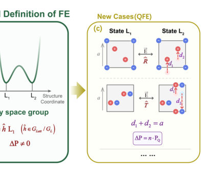
Summary. This paper introduces a new, unified definition of ferroelectricity that bridges the gap between classical polar materials and emerging quantum ferroelectrics. By focusing on switchable polarization differences rather than space group symmetry, the authors successfully identified dozens of new ferroelectric candidates. This work expands the search space for next-generation functional materials with controllable polarization.
Why it may be interesting. not directly relevant
Main problem. The existing definition of ferroelectricity is limited to polar space groups, failing to account for emerging quantum ferroelectrics (QFEs) that exhibit switchable polarization in non-polar space groups.
Main result. The authors propose a unified definition of ferroelectricity based on switchable polarization differences between energetically equivalent states, identifying a new class of QFEs and a large library of potential materials.
Method. A high-throughput screening workflow using the Materials Project database, combined with DFT, Berry-phase calculations, and machine-learning potentials (DREAM model) to evaluate energy barriers and polarization.
Model / system. The study covers a broad range of materials, including conventional ferroelectrics and quantum ferroelectrics (both integer and fractional), with specific focus on candidates like Ba3I6 and Cs2PdC2.
Key observables. Polarization difference (delta P), switching energy barriers, band gap, and coercive field.
Important parameters / regimes. Energy barrier threshold of 400 meV per formula unit, band gap > 0.1 eV, and quantized vs. arbitrary ionic displacements.
Assumptions / limitations. The screening assumes that materials with low switching barriers and robust insulating behavior are experimentally viable.
Figures summary. Fig 1 shows the comparison between conventional and QFE mechanisms and the new unified framework; Fig 2 illustrates the structural construction and screening workflow; Fig 3 displays crystal structures and migration pathways for Ba3I6 and Cs2PdC2; Fig 4 shows the temperature dependence of the coercive field.
Paper structure. The paper introduces the conceptual problem of the definition gap, proposes a new unified framework, describes a high-throughput screening methodology, presents the discovery of new QFE classes and specific material candidates, and concludes with the experimental implications.
Recent theoretical and experimental advances in quantum ferroelectrics suggest that ferroelectricity can also emerge in non-polar space group, highlighting the limitations of conventional polar space group criteria in identifying ferroelectric materials. Here, we introduce a unified definition based on switchable polarization differences between energetically equivalent states, which naturally encompasses conventional and quantum ferroelectrics. Guided by this principle, we implement a high-throughput screening strategy that systematically identifies both conventional and quantum ferroelectrics among experimentally synthesized materials. In particular, we identify a new type of quantum ferroelectric in which the quantized polarization arises from arbitrary ionic displacements, in contrast to previous quantum ferroelectrics (including both fractional and integer quantum ferroelectrics) where quantized polarization results from fractional or integer ionic displacements. Notably, we find that materials such as Ba3I6 and Cs2PdC2 exhibit low switching barriers and robust insulating behavior, highlighting their experimental viability. Our results reconcile conventional and quantum ferroelectrics, expand the accessible materials landscape, and provide a practical roadmap for discovering next-generation ferroelectrics with advanced switchable functionalities.